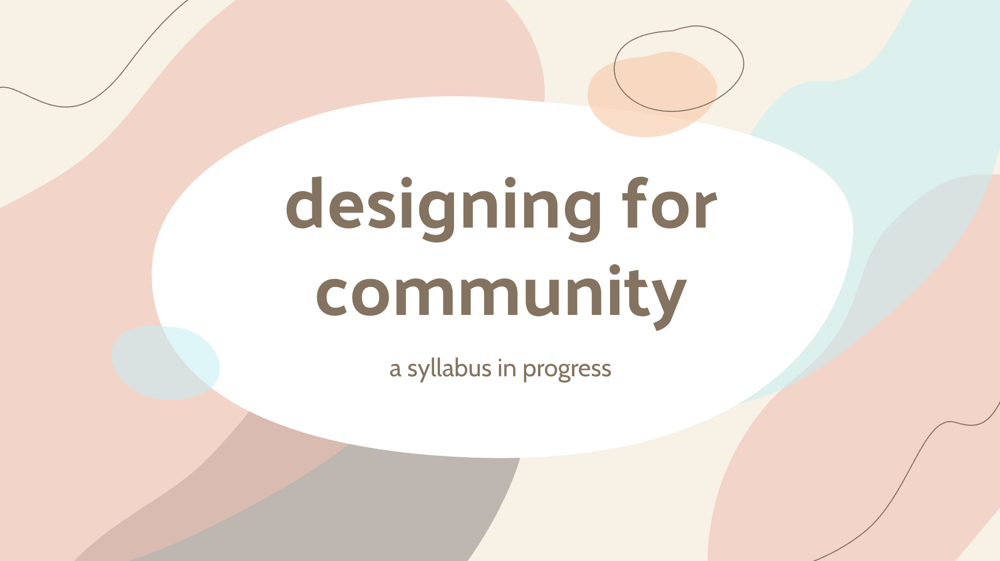
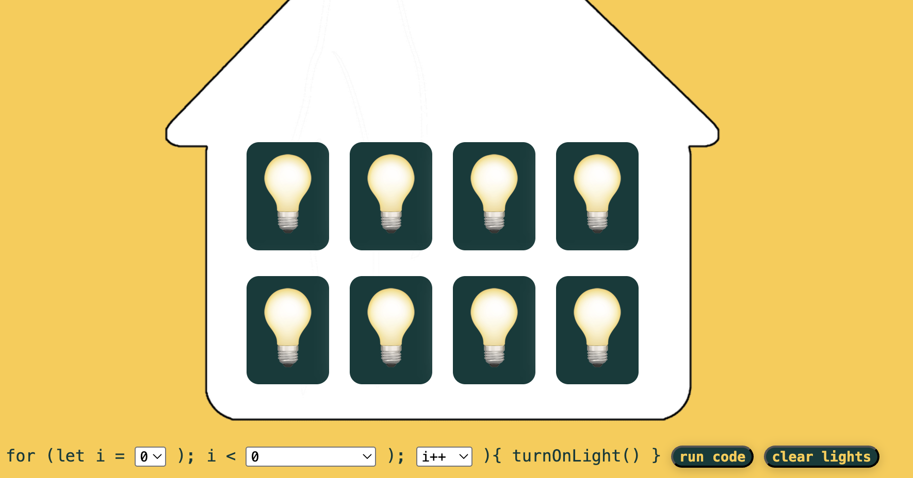
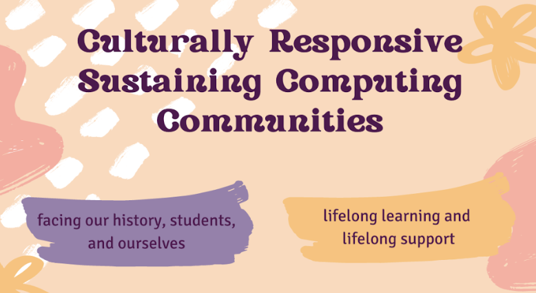
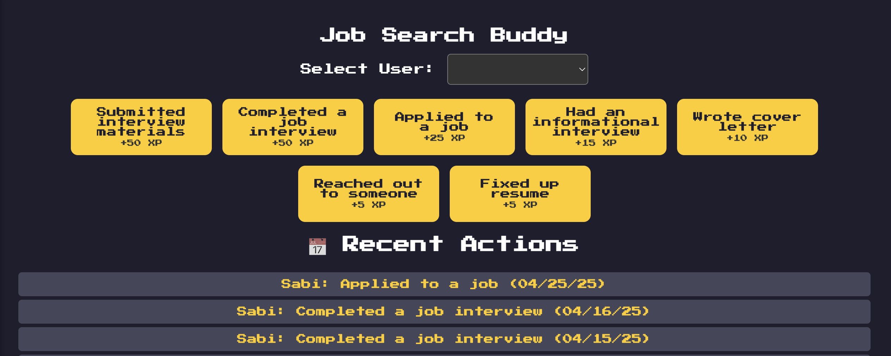

designing for community: syllabus for a cs x ethnic studies course that explores technology through a community-conscious lens

for loops explorer: interactive tool for exploring and understanding for loops using a house lights visual

culturally relevant computing communities: session outline for a plc for cs educators exploring culturally responsive-sustaining pedagogy

job treats: job application process helper that tracks different user actions and offers treats as motivation